GAME
むなかた虫とり日記
宗像が舞台の 夏休み虫とりRPG
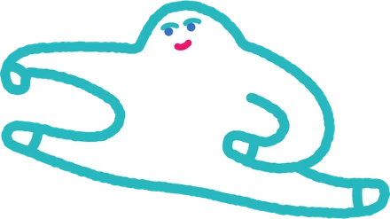
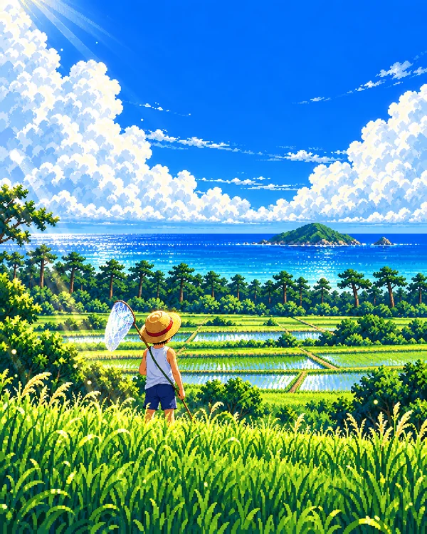
どんなゲーム？
夏休みのさいごの14日間（8月13日〜26日）。宿題を早めに終わらせた「ぼく」が、宗像じゅうを歩いて虫とりをします。つかまえた虫で自由研究の昆虫図鑑をつくって、二学期の発表でみんなをおどろかせよう！
なつかしいドット絵のRPGです。宗像の田んぼや河原、宗像大社の森、大島など、身近な場所が舞台になっています。
ゲームから、本物の虫とりへ

ゲームの中だけでなく、外での昆虫採集もいっしょに楽しめるしかけがあります。おうちではタブレットでゲーム、外ではスマホで本物の虫とり。
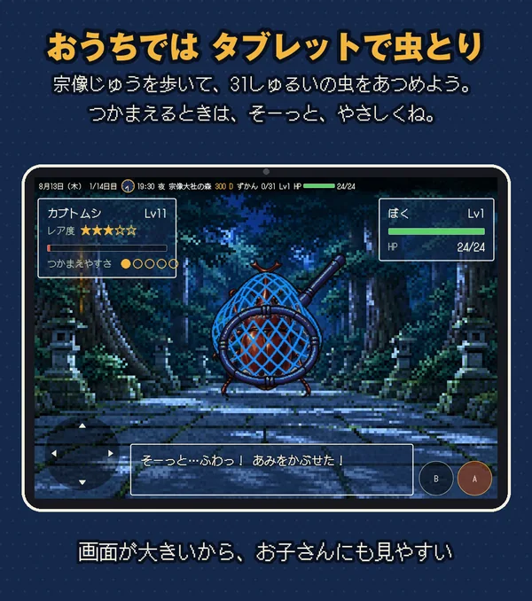
お子さまはタブレットで
画面が大きいので、ボタンが押しやすく、ドット絵の虫もよく見えます。
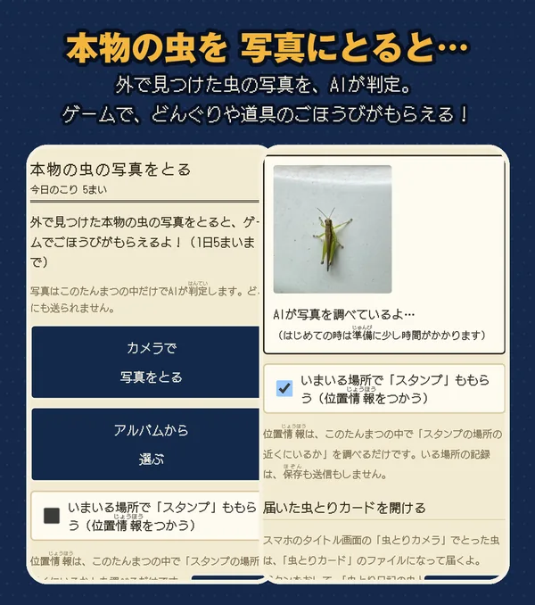
スマホで本物の虫をとると、ゲームの特典
外で昆虫採集をしているときに、スマホで本物の虫を撮影すると、AIが虫を見分けて、ゲームの中でどんぐりや道具などの特典がもらえます。
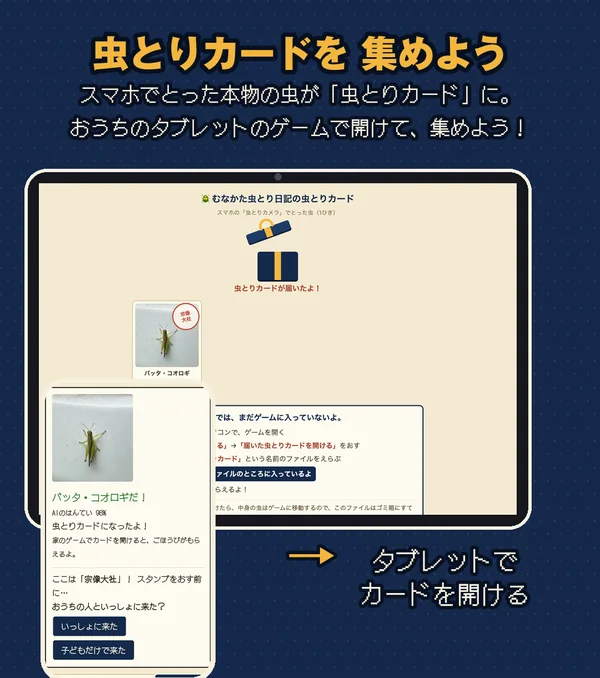
虫とりカードを、親のスマホから子どものタブレットへ
とった虫は「虫とりカード」になります。おうちの方のスマホからお子さまのタブレットへ送って、ゲームで開けて集められます。外あそびの楽しみが、家に帰ってからも続きます。
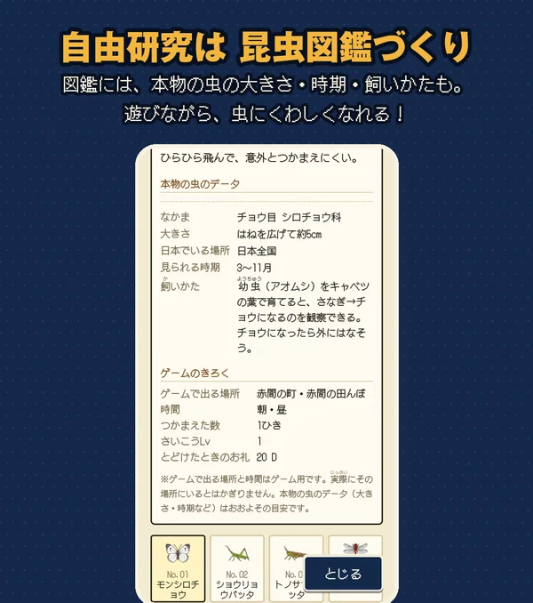
図鑑は、ほんものの昆虫採集の参考に
図鑑にのる虫には、実際の昆虫の情報（なかま・大きさ・いる場所・見られる時期・飼いかた）が入っています。虫とりに出かける前の下調べにも。
※ゲームの中で虫が出てくる場所は、ゲーム用に決めたものです。実際にその虫が見られる場所や時期とはちがうことがあります。
あそびかた
- 1
行き先をえらぶ
朝6時に家を出て、宗像市マップから行きたい場所へ。朝・昼・夕方・夜で、出てくる虫がかわります。
- 2
弱らせて、あみでキャッチ
草むらを歩くと虫が出てきます。HPをへらしすぎるとにげちゃうので、ちょうどいいところで「つかまえる」！
- 3
道具をそろえる
つかまえた虫を虫具店で売って、もっといいあみや虫かご、遠くへ行けるくつを買おう。
- 4
図鑑をうめる
夜9時には家に帰ってねる。14日目がおわったら、自由研究の昆虫図鑑を二学期に発表！
宗像の7つの場所で虫とり
- 赤間の町家と虫具店。ここからスタートモンシロチョウ、アブラゼミ
- 赤間の田んぼバッタ、ナツアカネ、オオカマキリ
- 釣川の河原トンボ、アメンボ、夜はゲンジボタル
- 宗像大社の森スニーカーが必要セミ、クワガタ、カブトムシ、タマムシ
- さつき松原スニーカーが必要クマゼミ、ハンミョウ、オニヤンマ
- 城山登山ぐつが必要ミヤマクワガタ、オオムラサキ、オオスズメバチ
- 大島神湊で乗船チケットを買うカラスアゲハ、オオクワガタ、伝説の虫…？
※ゲームに出てくる場所と虫の組み合わせはゲーム用のもので、実際にその場所にいる虫とはかぎりません。
31しゅるいの虫
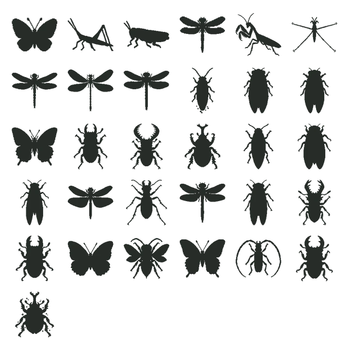
カブトムシ、クワガタ、セミ、トンボ、チョウ…。レア度★5の虫も。宗像の野山で見られる虫がたくさん出てきます。
※1しゅるいだけ、このゲームのための架空の昆虫がいます。ほかの30しゅるいは実在する昆虫です。
虫ずもう と エンディング
近所の子と、つかまえた虫で虫ずもう。甲虫・チョウ・トンボ…タイプで作戦がかわります。
エンディングは6しゅるい。図鑑のできばえで、二学期の発表の結果がかわります。めざせ「宗像市長賞」！
ゲームの画面
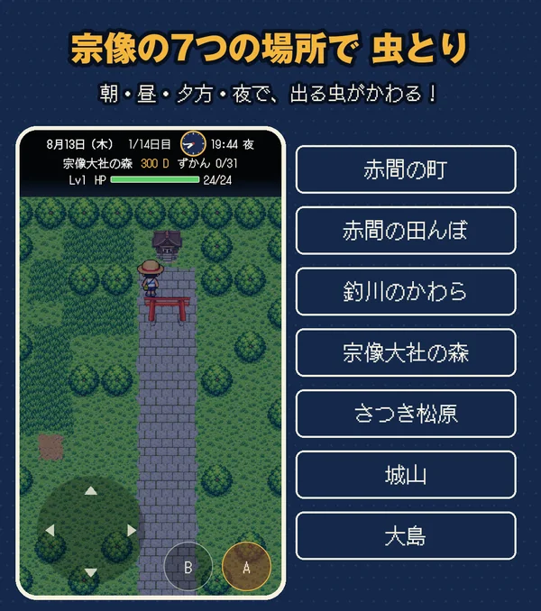
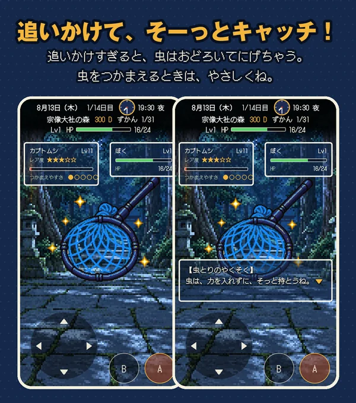
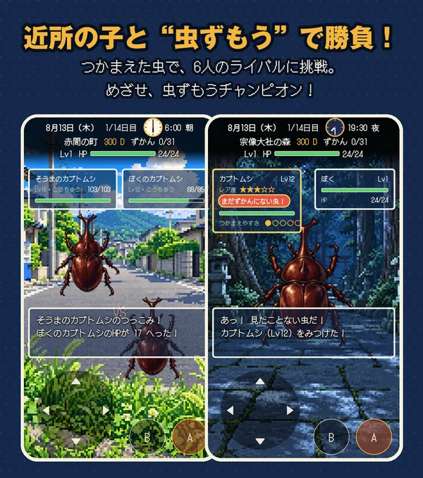
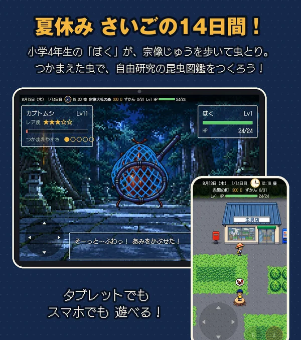
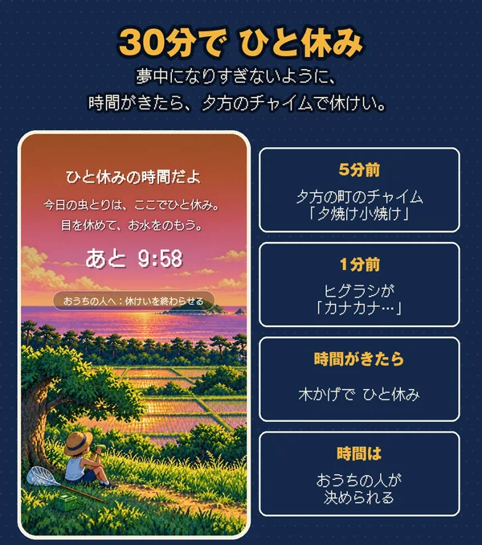
おうちの方へ
- 30分あそぶと、10分の休けいになります。決めた時間の5分前に町のチャイム、1分前にヒグラシが鳴ってお知らせします。時間はおうちの方が決められます。
- 虫の写真は、スマホ・タブレットの中だけでAIが判定します。写真が外に送られることはありません。
- 位置情報は「スタンプの場所の近くか」を調べるだけで、保存も送信もしません。スタンプの前に「おうちの人といっしょに来た？」と確認します。
- ハチなど危ない虫の写真には、ごほうびが出ません。危ない虫には近づかないように声をかけてあげてください。
- ゲームのセーブは、遊んでいる端末のブラウザに保存されます。